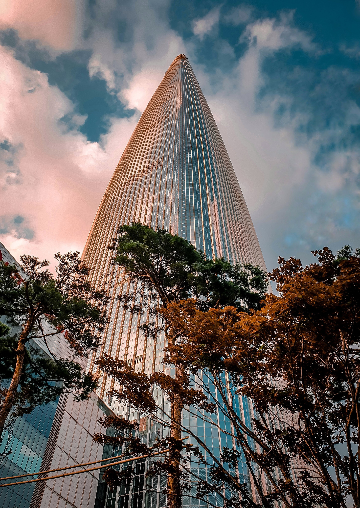

NAJWYŻSZE BUDOWLE ŚWIATA
Lotte World Tower


Lotte World Tower to okazały drapacz chmur w Seulu, Korei Południowej. Z wysokością wynoszącą około 555 metrów jest jednym z najwyższych budynków na świecie. Kompleks ten obejmuje biura, luksusowy hotel, centrum handlowe i widokowe obserwatorium, które oferuje niesamowite widoki na miasto i okolicę. Lotte World Tower to nie tylko symbol nowoczesności Seulu, ale także ważne centrum kultury, rozrywki i biznesu w regionie Azji Wschodniej.